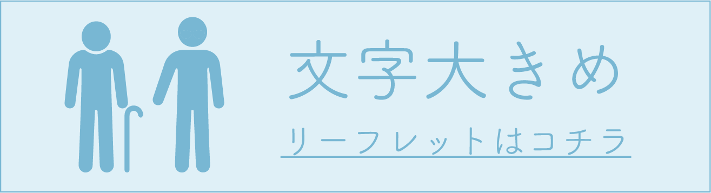

ゴミ処理リーフレットDL
簡潔にまとめたリーフレットになります。
合わせてご利用くださいませ。
高齢者の方向けのものは字を大きくして目の不自由な方でも利用できるような作りになっております。
|  | |
小さい文字などがあっても問題なくお読みできるような方々向けに作られていて、全体的に多機能で様々なゴミ処理情報が事細かく掲載しております。 |
全体的にテキストのサイズを大きく制作しており、小さい文字では読みにくい方向けに作られていて、ゴミ処理情報をできるだけ簡素に。それでいて必要な情報のみを得られるようなリーフレットになっております。 |
小さい文字などがあっても問題なくお読みできるような方々向けに作られていて、全体的に多機能で様々なゴミ処理情報が事細かく掲載しております。 |
全体的にテキストのサイズを大きく制作しており、小さい文字では読みにくい方向けに作られていて、ゴミ処理情報をできるだけ簡素に。それでいて必要な情報のみを得られるようなリーフレットになっております。 |
小さい文字などがあっても問題なくお読みできるような方々向けに作られていて、全体的に多機能で様々なゴミ処理情報が事細かく掲載しております。
全体的にテキストのサイズを大きく制作しており、小さい文字では読みにくい方向けに作られていて、ゴミ処理情報をできるだけ簡素に。それでいて必要な情報のみを得られるようなリーフレットになっております。
©️ Yachiyo City dust shoot site.
000- 0000-0000
aaaaaaaaaaaa@gmail.com